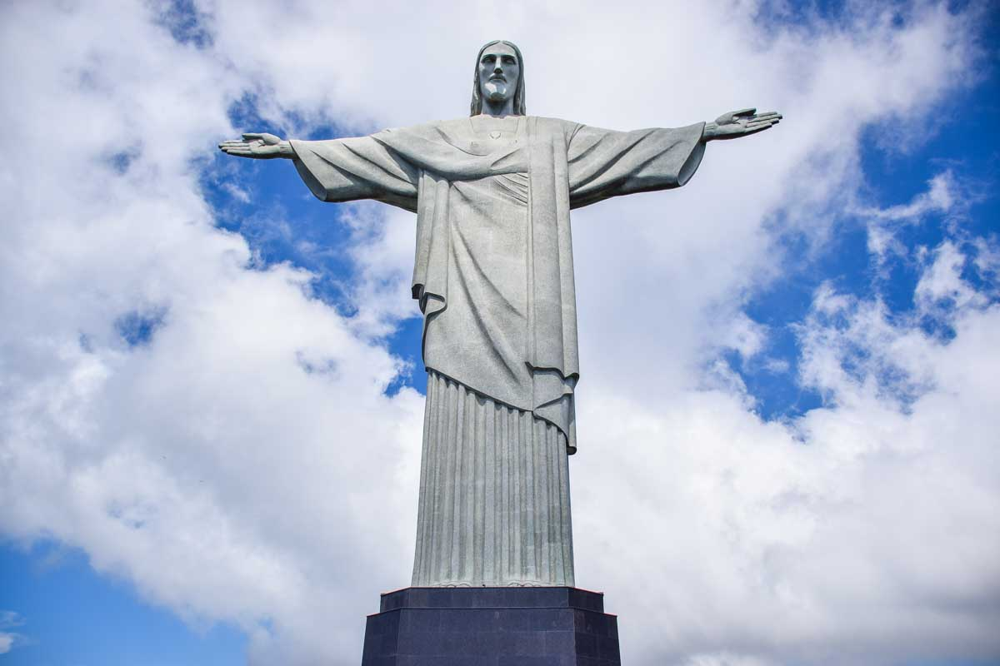
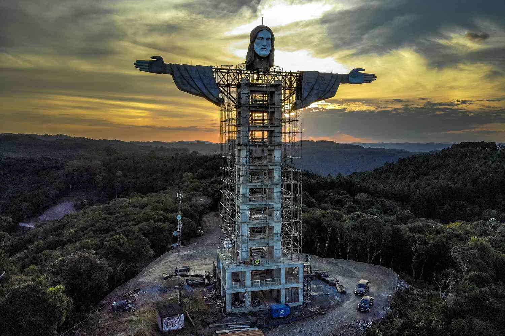
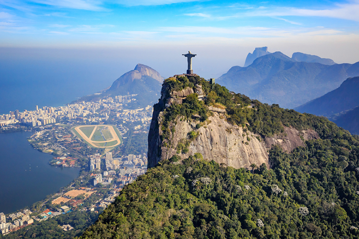

Christ the Redeemer is a statue of Jesus Christ located in Rio de Janeiro, Brazil. It is considered one of the most iconic landmarks in the country and is a symbol of Christianity and Brazilian culture.
The statue stands at 98 feet tall and is located at the peak of Corcovado Mountain. It was designed by French sculptor Paul Landowski and built by Brazilian engineer Heitor da Silva Costa. The statue is made of reinforced concrete and covered in soapstone. It was inaugurated on October 12, 1931.
The idea for a statue of Christ on Corcovado Mountain was first proposed in the 1850s, but it wasn't until the early 1900s that a campaign was launched to raise funds for its construction. The statue was finally completed in 1931, after a decade of construction. It has since become a major tourist attraction and a symbol of Rio de Janeiro.
Construction of the statue began in 1922 and was completed in 1931. The statue was designed by French sculptor Paul Landowski and built by Brazilian engineer Heitor da Silva Costa. It is made of reinforced concrete and covered in soapstone, a type of soft rock that is easy to work with and has a smooth surface. The statue is 98 feet tall and stands on a pedestal that is 26 feet high.
